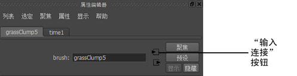
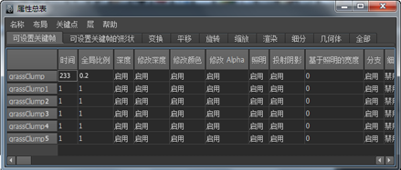

可以在场景中选择所有笔刷，并在“属性编辑器”(Attribute Editor)或“属性总表”(Attribute Spread Sheet)中进行查看。
还可以选择名称包含指定字符串的笔刷。例如，假定您使用预设称为 grassClump 的笔刷绘制多个笔划。默认情况下，这些笔划中的每一个都有笔刷名称，分别为 grassClump1、grassClump2、grassClump3，依此类推。可以选择名称包含“grassClump”的所有笔刷，并在“属性总表”(Attribute Spread Sheet)中快速更改所有这些笔刷的颜色。


选择场景中的所有笔刷
- .
按名称选择多个笔刷
- 在“建模”(Modeling)菜单集中，选择。此时将打开“选择包含指定字符的笔刷/笔划名称”(Select Brush/Stroke Names Containing)窗口。
- 在“名称片段”(Name Fragment)框中，键入想要选择的笔刷名称中包含的字符。
- 单击“选择笔刷”(Select Brushes)。打开“属性编辑器”(Attribute Editor)以查看选定的每个笔刷，或者使用“属性编辑器”(Attribute Editor)中的“选定”(Selected)菜单进行查看。
提示： 若要选择用相同笔刷绘制的所有笔划，可在命令行中使用 select 命令。例如，若要查找用草笔刷绘制的所有笔划，请在命令行中键入以下命令，然后按 Enter 键（Windows 和 Linux）或 Return 键 (Mac OS X)：
select “strokeShapegrass*”